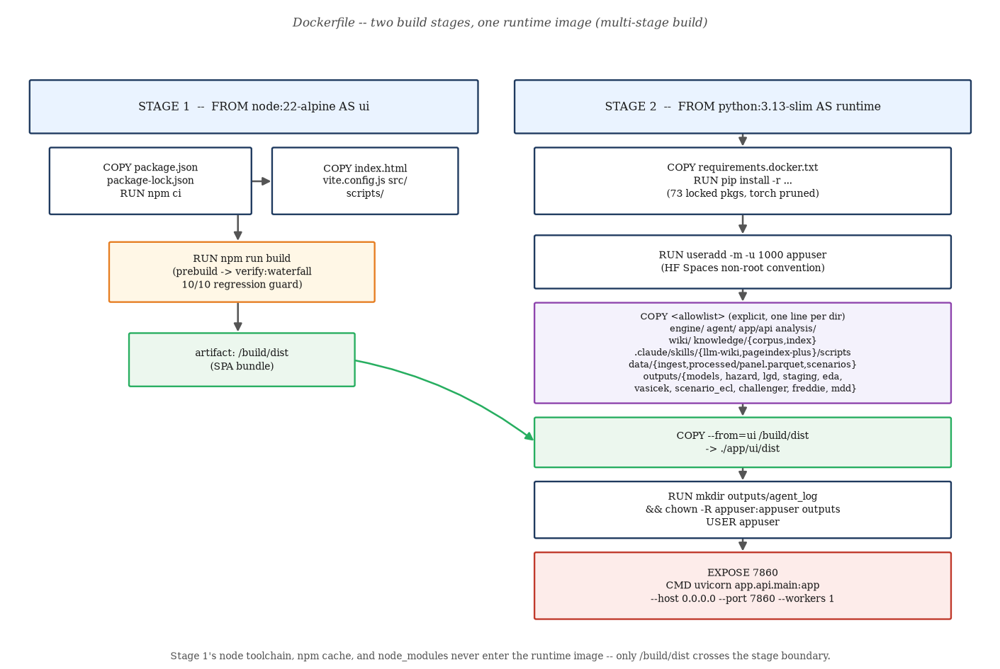
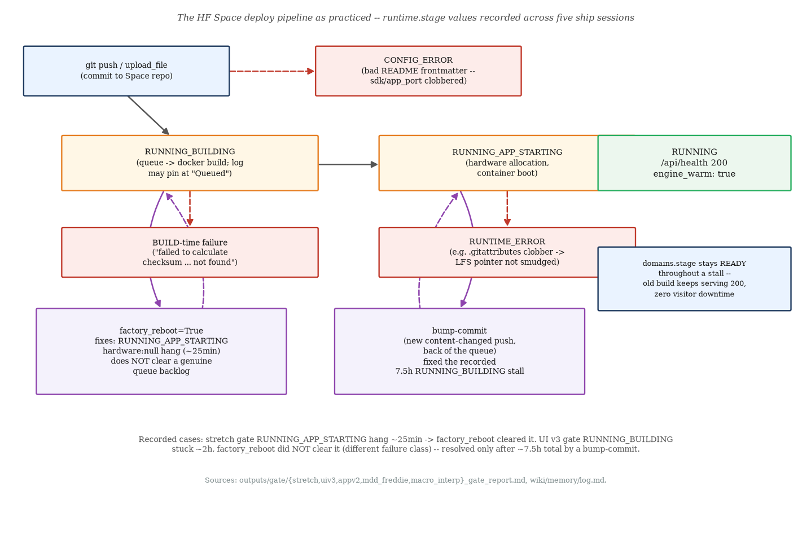

requirements.docker.txt and the torch-pruning decision.dockerignore whitelist and the 9-failure lessonfactory_reboot vs bump-commitChapters 1–7 built and validated a frozen ECL engine; Chapter 8 wrapped it in an agent; Chapter 9
documents the app that puts both in front of a user. None of that reaches anyone until it is packaged into a
single container and shipped to a place the public internet can reach — this chapter is that packaging and
shipping, read at the same level of operational detail as the rest of the compendium, not glossed over as
"and then we deployed it." The project's deployment target throughout has been a single Hugging Face Space,
Docker SDK, public: https://huggingface.co/spaces/Preetomsorkar/ifrs9-ecl-copilot. This is a
theory-light, infra-heavy chapter — notes/plan/topic_map.md's D5 entry records no fixture and no
theory anchor for this topic, and there are accordingly no derivations here. What there is instead is a real,
occasionally messy operational history: six recorded ship sessions (Day 4, a stretch phase, App v2,
UI v3, the MDD/Freddie ship, and a macro-interpretation ship) across which the
same Dockerfile and the same Space were built, broken, diagnosed, and fixed in ways worth reading closely —
§10.6–10.7's own runtime.stage table draws on five of those six specifically (every
session after Day 4, whose own gate report predates that explicit stage-polling practice) — because the
failure modes recur in any team's first few Docker-on-a-managed-platform deployments.
One Dockerfile at the repo root builds one image containing
both the API (FastAPI, serving the agent and every engine-backed endpoint) and the built single-page app (the
Preact/ECharts SPA, mounted as static files at /). There is no separate frontend host, no reverse
proxy, no second container — Hugging Face Spaces' Docker SDK runs exactly one container per Space,
listening on a single port, and that constraint is what shapes almost every decision in this chapter: the
Dockerfile has to build the SPA itself (there is no CI step outside the container to hand it a pre-built
dist/), and the FastAPI app has to serve that dist/ directly (app/api/main.py
mounts StaticFiles(directory=UI_DIST, html=True) at /, with a graceful "UI not built"
fallback page if dist/ is absent — see §10.8's local-dev gotcha).

FROM stages, one runtime image
(Dockerfile lines 33–135).FROM stages
that never coexist at runtime (§10.2), forces every secret to travel through Space-level environment
injection rather than a build argument (§10.5), and forces the whole "did the new build actually go live"
question in §10.6–10.7 down to a single container's runtime.stage value rather than a
fleet of independently-rolling services. Every operational story in this chapter is a consequence of that one
constraint.
Preetomsorkar/ifrs9-ecl-copilot, a
separate git repository that HF's platform builds from) are not the same git history — code is
uploaded to the Space via huggingface_hub.HfApi calls (upload_file,
upload_folder, create_commit), each call creating its own commit on the Space's own
timeline. This distinction is the root cause of two separate incidents in §10.5 (the README and
.gitattributes clobbers) and is worth internalising before anything else in this chapter: a file
being correct in the project repo says nothing about whether the Space's copy of that file agrees with it,
until someone diffs the two or uploads explicitly.
npm run build itself, rather than the project shipping a
pre-built app/ui/dist/ and having the Dockerfile just COPY it in?
dist/" step to run. The Dockerfile has to be self-sufficient: stage 1 installs
Node, runs npm ci and npm run build inside the build itself, and only the
resulting /build/dist artifact crosses into stage 2 (§10.2). app/ui/dist
is itself .dockerignored from the build CONTEXT (§10.9) precisely so a stale local build
can never accidentally get copied in place of a fresh one.The Dockerfile is 135 lines. What follows is every instruction that actually runs, grouped into the two
FROM stages, expandable in place — collapse what you already know, expand what you don't. Every
line is quoted verbatim from the current Dockerfile.
FROM node:22-alpine AS ui (lines 33–40) build onlyWORKDIR /build COPY app/ui/package.json app/ui/package-lock.json ./ RUN npm ci --no-audit --no-fund COPY app/ui/index.html app/ui/vite.config.js ./ COPY app/ui/src ./src COPY app/ui/scripts ./scripts RUN npm run build
The package.json/package-lock.json COPY
happens before the source-code COPYs, deliberately — this is the standard Docker
layer-cache trick: as long as the lockfile doesn't change, npm ci's layer is reused on every
rebuild, and only source-code changes (the far more frequent case) invalidate the cheaper, later layers.
npm run build's prebuild script runs verify:waterfall first (10/10
regression checks against the historical-mode waterfall adapter, per outputs/gate/mdd_freddie_gate.md
and macro_interp_gate.md) — a broken UI build fails the Docker build itself, before any Python
code is even touched. The stage's only output that matters downstream is /build/dist;
everything else (the Node runtime, node_modules, npm's cache) is thrown away when the stage
ends.
FROM python:3.13-slim AS runtime, dependencies (lines 43–53) runtimeENV PYTHONUNBUFFERED=1 PYTHONDONTWRITEBYTECODE=1 PIP_NO_CACHE_DIR=1 WORKDIR /app COPY requirements.docker.txt ./ RUN pip install --no-cache-dir -r requirements.docker.txt
requirements.docker.txt is COPY'd and installed before
any project code — same layer-cache logic as stage 1: dependency changes are rare, source changes
are frequent, so the expensive pip install layer should sit as early (and therefore as cacheable)
as possible. PIP_NO_CACHE_DIR=1 keeps pip's own download cache out of the image layer entirely
(there is no benefit to caching downloads inside a throwaway build context). §10.3 covers what's actually
in this file and why torch is missing from it.
RUN useradd -m -u 1000 appuser
Comment in the Dockerfile calls this the "HF Spaces convention: run as non-root uid
1000" — Spaces are a shared multi-tenant platform, so running as root inside the container is treated as bad
practice even though nothing in this specific app needs elevated privileges. The USER appuser
switch itself doesn't happen until line 132, after every file-owning COPY — file
ownership under a non-root user has to be arranged (chown, line 130) before the process
drops privileges, not after.
Rather than COPY . . plus a broad .dockerignore exclude
list, the Dockerfile lists every runtime directory it needs, one COPY line at a time, each with an
inline comment explaining what reads it:
COPY engine ./engine # the FROZEN five (hazard/lgd/ead/staging/ecl)
COPY agent ./agent
COPY app/__init__.py ./app/__init__.py
COPY app/api ./app/api
COPY analysis ./analysis
COPY wiki ./wiki # Tier-3 retrieval sources (agent/tier3_retrieval.py)
COPY knowledge/corpus ./knowledge/corpus
COPY knowledge/index ./knowledge/index
COPY .claude/skills/llm-wiki/scripts/wiki_query.py .claude/skills/llm-wiki/scripts/wiki_graph.py \
./.claude/skills/llm-wiki/scripts/
COPY .claude/skills/pageindex-plus/scripts/pageindex_query.py \
./.claude/skills/pageindex-plus/scripts/
COPY data/__init__.py ./data/__init__.py
COPY data/ingest ./data/ingest
COPY data/processed/panel.parquet ./data/processed/panel.parquet
COPY data/scenarios/*.csv ./data/scenarios/
COPY outputs/models ./outputs/models # pre-fitted joblib cache, see s10.10
COPY outputs/variable_dictionary.md ./outputs/variable_dictionary.md
COPY outputs/hazard ./outputs/hazard
COPY outputs/lgd ./outputs/lgd
COPY outputs/staging ./outputs/staging
COPY outputs/eda ./outputs/eda
COPY outputs/vasicek ./outputs/vasicek
COPY outputs/scenario_ecl ./outputs/scenario_ecl
COPY outputs/challenger ./outputs/challenger
COPY outputs/freddie ./outputs/freddie
COPY outputs/mdd ./outputs/mdd
§10.9 has the full "what's in, what's out, and why" inventory; §10.4
walks the outputs/freddie/outputs/mdd lines' own build history in detail — they were
the two most recently added lines in this block, and they broke the build nine times before shipping clean.
COPY --from=ui /build/dist ./app/ui/dist RUN mkdir -p outputs/agent_log && chown -R appuser:appuser /app/outputs USER appuser EXPOSE 7860 CMD ["uvicorn", "app.api.main:app", "--host", "0.0.0.0", "--port", "7860", "--workers", "1"]
COPY --from=ui is the only line in stage 2 that reaches back into
stage 1 — the syntax is what makes this a genuine multi-stage build rather than two unrelated
Dockerfiles pasted together: stage 1's entire filesystem is discarded except for this one named artifact.
outputs/ is made writable for appuser specifically (the agent's audit trail,
outputs/agent_log/*.jsonl, and a possible model-cache refresh both write there at runtime — see
§10.10) — everything else copied into the image stays read-only under the non-root user, which is the
correct default for reference material nothing should ever mutate. --workers 1 matters
operationally: the in-process singleton engine state (Chapter 8's _STATE, warmed once at
startup) would be duplicated, refit, and inconsistently warmed across multiple worker processes — this is a
single-worker design by necessity, not an oversight, and the SSE trace-replay endpoint documented in Chapter 8
is a recorded consequence of that same constraint.
COPY . . plus a
.dockerignore exclude list is less typing, but a forgotten exclude silently ships something (a
secret, a multi-gigabyte raw-data directory, dev tooling) with no build-time signal that anything went wrong —
the build just succeeds, quietly larger or less safe than intended. The explicit allowlist inverts the failure
mode: forgetting to add a new output directory's COPY line means that directory is
simply absent at runtime — visible immediately as a 404/500 from the endpoint that needed it
(exactly what happened before outputs/freddie/outputs/mdd were added, §10.4)
rather than a silent security lapse discovered later. The project accepts the extra Dockerfile verbosity for
that trade.
package.json/package-lock.json copied and npm ci run in a
separate, earlier layer from the rest of the UI source in stage 1?
.jsx source (the common case) reuses the cached npm ci layer instead of
reinstalling every dependency from scratch. If the source COPY came first, any source change
would invalidate every layer after it, including the expensive install.USER appuser appears near the very end of the Dockerfile, not right after
useradd. Why does the ordering matter?
COPY and file-creating RUN between useradd
and USER appuser still executes as root (the default until USER switches it),
which is required — root has the permissions to write into /app and to chown the
outputs directory to appuser. Switching to the unprivileged user any earlier would make several
of those COPY/RUN instructions fail outright, and switching it any later (or not at
all) would leave the running container process privileged unnecessarily.requirements.docker.txt and the torch-pruning decisionrequirements.docker.txt is not hand-maintained — its own header records exactly how it is
produced:
uv export --no-dev --no-hashes --no-emit-project --prune torch \
-o requirements.docker.txt
Run against uv.lock, this resolves the project's exact locked
dependency graph — 73 pinned packages (verified live this session: grep -c "^[a-zA-Z0-9_.-]\+=="
requirements.docker.txt → 73), each with its own pip version pin and a comment trail
recording which other package pulled it in (e.g. fastapi==0.139.0 # via ifrs9-ecl-copilot).
--no-dev drops pytest/mypy/the review tooling; --no-emit-project drops the project's
own package entry (nothing needs to pip install itself); --prune torch is the
deliberate exclusion this section is about.
pyproject.toml lists torch>=2.12.1 as a real
project dependency — it is not unused code, it backs the LSTM/MLP challenger study (challenger/,
Chapter 7/12's territory: the permutation-importance and reliability-diagram comparisons against the
production cloglog hazard). But nothing under engine/, agent/, or
app/ imports it — the challenger study is an offline research artifact whose results
(fitted coefficients, AUC comparisons, the saved .pt checkpoint) get read as static reports and
PNGs, never re-executed at request time. A full uv export without --prune torch
would pull in torch's CUDA-capable wheel regardless of whether a GPU is present — the Dockerfile's own comment
puts the avoided cost at ~5 GB, confirmed independently in wiki/pages/agent-layer.md's
"Known caveats": "torch pruned from the Docker image (challenger-only, would add ~5GB)". Grepping the actual
file confirms the prune took effect: grep -i "^torch" requirements.docker.txt returns nothing.
--prune) rather than left to whoever writes the Dockerfile to notice and hand-edit a
requirements file that then silently drifts from uv.lock. Because requirements.docker.txt
is regenerated from uv.lock by the same one-line command every time, the image's dependency set
can never quietly diverge from what the project's own lockfile says it should be, apart from the one named,
intentional prune.
--prune torch is safe today only because it is verifiably true today
(no runtime import graph reaches it), not because torch is inherently something to always exclude from a
Docker image. Anyone re-running uv export --prune torch after adding a new runtime dependency on
torch would silently ship a broken image (an ImportError at the first request that needs it) —
worth a grep for import torch under engine//agent//app/
before ever touching that flag.
pyproject.toml declares torch as a real dependency, but it is used only by
the offline challenger study (challenger/), which is not shipped and never imported by any
runtime module (engine/, agent/, app/). Its CUDA-capable wheel would
add roughly 5 GB to the image for zero runtime benefit, so the Docker image's own dependency export uses
uv export --prune torch to drop it deliberately, leaving 73 other pinned packages that
are reachable from the runtime import graph. Confirmed by grep: torch does not appear anywhere in
requirements.docker.txt.requirements.docker.txt directly to bump one package's pinned
version, without touching uv.lock. What goes wrong with that workflow over time?
uv.lock via
uv export — a hand-edit would work for exactly one build, then get silently overwritten (or
drift further out of sync) the next time someone regenerates the file correctly, and in the meantime the
image's actual dependency set would no longer match what uv.lock (and therefore the local dev
environment, uv sync) resolves to — a classic two-source-of-truth bug. The correct fix is always
to change pyproject.toml/re-run uv lock, then regenerate
requirements.docker.txt from the updated lockfile..dockerignore whitelist and the 9-failure lesson.dockerignore uses a deny-most, allow-some pattern for outputs/ specifically
(everything else in the file is a simpler flat exclude list — secrets, VCS metadata, node_modules, raw data,
dev-only directories):
outputs/* !outputs/models !outputs/variable_dictionary.md !outputs/hazard !outputs/lgd !outputs/staging !outputs/eda !outputs/vasicek !outputs/scenario_ecl !outputs/challenger !outputs/freddie !outputs/mdd
outputs/* excludes everything under outputs/ from the
Docker build context by default (a directory has dozens of subdirectories — agent_log/,
demo/, gate/, satellite/, panel/, ecl/,
ead/, scenarios/, mcp/, and more — that are dev-only reports/traces
never meant to ship), then each !outputs/X line re-admits exactly one subdirectory the Dockerfile
actually COPYs. This is deliberately the mirror image of §10.2's Dockerfile allowlist: the
Dockerfile lists what it wants to COPY, and .dockerignore has to separately list
what it will let through for that COPY to find — two lists that must stay in sync, and
the failure mode below is exactly what happens when they don't.
.dockerignore filters the build CONTEXT, before the daemon ever
sees a file. When a Docker (or HF Spaces' managed BuildKit) build starts, the client first assembles a
build context — the subset of the repository tree that gets sent to the build daemon at all — and
.dockerignore is applied at exactly that step, client-side, before a single COPY
instruction runs. A path excluded by .dockerignore does not exist from the daemon's point of view,
full stop — it is not merely hidden or deprioritised, it was never transmitted. This single fact is
the whole explanation for the incident below.
Commit 4647e5d ("MDD + Freddie 'Real Data' tab: final build items") added two new
COPY lines to the Dockerfile — COPY outputs/freddie ./outputs/freddie and
COPY outputs/mdd ./outputs/mdd — to serve the newly-built Freddie ("Real Data") tab and the
compiled Model Development Document. outputs/gate/mdd_freddie_gate.md records what happened when
that Dockerfile was pushed to the Space: 9 consecutive build attempts, 0 successes, over roughly 29
minutes, every single one failing with the identical Docker error failed to calculate checksum ...
"/outputs/freddie": not found (or the equivalent for /outputs/mdd) — despite
list_repo_files confirming, at every failing commit SHA, that the files genuinely existed in the
Space's git repo, and despite the underlying LFS-tracked PNGs resolving correctly over plain HTTP throughout.
| What was tried | Result |
|---|---|
Plain restart_space() ×3 | same checksum failure each time |
| Content-change re-push | same checksum failure |
restart_space(factory_reboot=True) | same checksum failure |
| Atomic delete+recreate of both directories | self-inflicted: briefly deleted BOTH dirs from the repo entirely (caught immediately via file-count diff, restored); same checksum failure on the corrected commit |
The gate report's working theory at the time was a genuine platform-side issue — "a persistent
LFS/context-resolution race," matching a documented class of Hugging Face community reports and one prior
occurrence recorded in the Space's own git history — not the project's GitHub repo, per §10.1's
gotcha — commit cc466315de667c87c..., "Retrigger stalled build (queue wedge, content
unchanged)". Given a live Space sitting at HTTP 503 the whole time, the session shipped a
workaround: the two new COPY lines were commented out of the Dockerfile (both directories
remained present in the Space's git repo, just not baked into the image), the build succeeded immediately, and
the report's own verdict was explicitly PARTIAL — the Real Data tab and the live MDD page were
acknowledged as not-yet-functional pending "re-enablement... likely simply elapsed wall-clock time... for
whatever storage tier the Docker build's context-fetcher reads from to catch up."
4647e5d) that actually shipped cleanly — the same commit whose message narrates this whole
incident — reveals the real root cause in its own summary line: "Ship fix: .dockerignore
outputs/* whitelist was missing outputs/freddie + outputs/mdd -> 9 identical HF COPY failures; whitelisted
+ COPY lines restored." The two-line diff that fixed it is exactly the two !outputs/freddie
/ !outputs/mdd lines shown above. In other words: outputs/freddie and
outputs/mdd were never actually reaching the Docker build context at all — the blanket
outputs/* exclude in .dockerignore was silently stripping them out before the build
even started, on every single one of the 9 attempts, regardless of what the Space's git repo, LFS, or hardware
allocation were doing. Every mitigation tried (restarting, factory-rebooting, re-uploading, waiting) was
aimed at the wrong layer of the pipeline: none of those levers can put a file back into a build context that
.dockerignore is actively excluding, because the exclusion happens before any of those levers'
effects would even be visible. "Not found" was not a flaky platform error masquerading as a real one — it was
a completely accurate error describing a real, self-inflicted, and easily fixable gap.
Dockerfile's own
inline comment block above these two COPY lines (lines 14–23, headed # NOTE
(2026-07-19)) still narrates the platform-race theory and points to
outputs/gate/mdd_freddie_gate.md for "the eventual resolution (longer wall-clock wait for backend
propagation, not more aggressive cache-busting)" — and the comment directly above the two COPY
lines themselves (lines 110–122) is still headed # TEMPORARILY DISABLED and instructs a
future reader to "uncomment... once the platform-side build issue clears," even though those two lines are
not commented out in the file as it stands today (verified by reading the live file). Both comment
blocks were written and committed in the same commit whose own message identifies the real, different root
cause and confirms the fix shipped. Read the commit message and the .dockerignore diff as the
authoritative account of what actually happened and what actually fixed it; read the Dockerfile's own inline
prose as a snapshot of the mid-incident working theory that was superseded before the commit closed, never
corrected in the comment text itself. This is exactly the kind of gap a reader should learn to check a diff
for, not just trust a nearby comment.
COPY instruction reports a path as "not found" for a directory that plainly exists in the
repository, the very first thing to check — before any platform-side theory, before any restart, before any
re-upload — is whether .dockerignore actually admits that path into the build context. A
deny-most/allow-some pattern (outputs/* then a list of re-admits) is exactly the shape most prone
to this failure mode, because adding a new COPY outputs/X line to the Dockerfile is a one-file
edit that feels complete on its own — nothing about editing the Dockerfile forces a corresponding
.dockerignore edit, and nothing short of an actual build attempt surfaces the gap.
COPY outputs/freddie ./outputs/freddie fail with "not found" when
outputs/freddie was demonstrably present in the Space's git repository at the failing commit
SHA?
.dockerignore's outputs/* line excluded outputs/freddie (and
outputs/mdd) from the context assembled for the build, and that filtering happens client-side,
before the daemon receives anything. From the daemon's point of view the path genuinely did not exist among
the files it was given, so "not found" was a true, accurate error — not a flaky platform bug. The fix was two
added lines, !outputs/freddie and !outputs/mdd, re-admitting those directories into
the context (see the .dockerignore diff above)..dockerignore lines) and its own summary line are what
the shipped, working state of the repository is actually built on, whereas the gate report is a faithful
record of a diagnosis-in-progress that was later superseded. Neither document is dishonest — the gate report
correctly records what was tried and known at that point in the session; the commit message records
what was learned afterward, before the final ship. When they conflict, the later artifact that
matches the code as it actually stands (here, the presence of the two !outputs/ lines) is the
one to believe.EXPOSE and listen
on port 7860 (the Dockerfile's final line: EXPOSE 7860 +
CMD [..., "--port", "7860", ...]) — the platform routes public traffic to that port specifically;
a container listening anywhere else simply never receives a request. The same port convention is baked into
app/ui/vite.config.js's dev-server proxy target (§10.8) and into every local
docker run -p 7860:7860 invocation in the README's quickstart.
OPENROUTER_API_KEY, is set as an HF Space secret (via the Space's Settings →
"Variables and secrets" panel) and injected as an environment variable when the container starts — it is never
a build argument, never baked into a layer, and the frontend never sees it. Locally, the equivalent is
docker run -e OPENROUTER_API_KEY -p 7860:7860 ifrs9-ecl-copilot. Enforcement is layered:
.dockerignore excludes .env/.env.*/*.key/*credentials*/*.pem
from the build context outright, and the Day-4 gate report records the actual verification step —
docker save ifrs9-ecl-copilot:day4 | grep -a -c "sk-or-" against every layer of the saved image,
0 matches. Without the key set at all, the app still serves: a deterministic keyword router answers the
four Tier-1 tool families offline and refuses everything else — "a demoed feature," per the Dockerfile's own
top comment, not a degraded fallback to apologise for.
# local docker build -t ifrs9-ecl-copilot . docker run -e OPENROUTER_API_KEY -p 7860:7860 ifrs9-ecl-copilot
(README.md, "Docker (what the HF Space runs)" — the exact command the
live Space's own container invocation mirrors.)
Hugging Face Spaces read their configuration (SDK type, the app's listening port, title, colour theme, short
description) from a YAML frontmatter block at the very top of the Space's own README.md — the
convention looks like:
--- title: IFRS 9 ECL Copilot sdk: docker app_port: 7860 pinned: false ---
This file is not the project's own root README.md — it is a
separately, independently maintained file that lives only in the Space's own git repo, with no corresponding
source file tracked in the project repository (confirmed by diffing the two before editing, per
outputs/gate/mdd_freddie_gate.md §4). The project README documents the codebase for GitHub
readers; the Space README's frontmatter is machine-read configuration for HF's platform, plus a short
human-facing pitch below it.
README.md clobbers the Space's
frontmatter. Both the App v2 gate and the (independent) stretch gate hit this same incident: an upload
step used an allow_patterns list that happened to include the repository's plain
README.md — which carries no sdk:/app_port: frontmatter at all — and
overwrote the Space's tailored README wholesale. Consequence: the platform could no longer determine how to
build or run the Space, and it dropped into runtime stage CONFIG_ERROR immediately. Both
incidents were caught and fixed within the same session (rebuild the Space README from its own last-known-good
frontmatter + an updated body, upload it as its own targeted commit), but the App v2 gate report is blunt
about the generalisable lesson: "never blanket-upload the repo's own .gitattributes/
README.md to the Space without diffing against the Space's current copy first — they are
separate, independently-evolved files." A second, related incident in the same session — overwriting the
Space's .gitattributes with the repo's bare version, which lacked the correct
filter=lfs rules for *.parquet/*.joblib — produced a different
failure signature entirely: the build succeeded, but the container crashed at startup with
pyarrow.lib.ArrowInvalid: Could not open Parquet input source '<Buffer>': Parquet magic bytes not
found in footer, because the checkout smudged
LFS pointer text instead of real file content into data/processed/panel.parquet. HF's platform
surfaced that as runtime stage RUNTIME_ERROR — a different stage entirely from
CONFIG_ERROR, because the build itself had genuinely succeeded; only the running container was
broken.
.dockerignore lesson: a file that looks single and canonical from inside the project repo
(README.md, .gitattributes) is, from the Space's point of view, actually two
independently-evolved files that happen to share a path — and any tooling that treats "upload everything that
changed in the project repo" as safe by default will eventually clobber the Space-specific half of that pair.
Every ship session after the App v2 gate adopted the same fix as policy: scope uploads to exactly
the changed application files, and touch the Space's README.md/.gitattributes only
via their own narrowly-targeted, diffed-first commits (UI v3's gate report explicitly names this as a
lesson learned from App v2's incident, applied proactively).
CONFIG_ERROR and RUNTIME_ERROR look similar from the outside (the Space
is down) but mean opposite things about where to look. CONFIG_ERROR means the platform never
even attempted to interpret the Dockerfile — usually a malformed or missing frontmatter, fixable by inspecting
the README's top block. RUNTIME_ERROR means the build succeeded and the image is valid Docker, but
the process inside it crashed — the fix lives in application code, data integrity, or environment/secrets, not
in the README at all. Conflating the two wastes debugging time in the wrong file.
OPENROUTER_API_KEY injected at container runtime (a Space secret) rather than
passed as a Docker build argument?
docker save | grep check verifies (0 matches for the key's known prefix across every saved
layer).README.md and .gitattributes — both are independently
maintained on the Space (the README carries HF-specific YAML frontmatter the project's own README lacks; the
.gitattributes carries LFS filter rules for large tracked binaries the project's bare version
doesn't declare). Blanket-including either one clobbers the Space's own correct copy and produces a real
outage (CONFIG_ERROR for the README, RUNTIME_ERROR for
.gitattributes), as recorded in two separate gate sessions.Every ship session polls the same underlying signal — HfApi.space_info(..., expand=["runtime"])'s
runtime.stage field — from the moment a commit lands on the Space until the app answers real
traffic. The literal stage values recorded across five ship sessions (quoted verbatim from the gate reports,
not paraphrased) are shown in Exhibit 10.2.

runtime.stage
values recorded across five ship sessions (outputs/gate/{stretch,uiv3,appv2,mdd_freddie,macro_interp}_gate_report.md).[08:17:47] stage=RUNNING_BUILDING sha=6675237... [08:18:03] stage=RUNNING_APP_STARTING [08:18:47] stage=RUNNING_BUILDING (rebuild churn, same commit) [08:19:02] stage=RUNNING
(outputs/gate/macro_interp_gate.md §4 — the cleanest recorded
run: RUNNING reached ~75s after push, "no queue stall this time." Note the churn: even a clean run can bounce
back into RUNNING_BUILDING briefly before settling — the state machine is not strictly
monotonic.)
Reaching RUNNING confirms the container started; it does not by itself confirm the right
code is running. Every recorded ship session adds an explicit content check on top of the stage signal:
/assets/index-DP9C4-QY.js) and confirm it matches the hash npm run build
produced locally in the same session — a mismatched hash would mean the live Space is still serving an older
build even though its stage reads RUNNING.Dockerfile,
app/ui/package.json, and app/ui/scripts/verify-waterfall.mjs straight from the Space
repo and diffed them byte-for-byte against the local, already-verified copies — confirming the upload itself
was correct even while the build queue had not yet cleared.macro_interp_gate.md goes further still, independently
recomputing a served coefficient's hazard_ratio_per_unit as round(exp(coef), 6) in
its own verify script and confirming an exact match against the API's own field, for three sampled rows.RUNNING as
the start of verification, not the end of it, precisely because the README/.gitattributes
incidents (§10.5) and the outputs/freddie/outputs/mdd incident (§10.4)
each demonstrate a distinct way a Space can look healthy from the stage signal alone while actually serving
stale, broken, or incomplete functionality.
RUNNING and /api/health returned 200. Is
that sufficient evidence the newly-pushed code is what's actually live?
RUNNING and a healthy /api/health only confirm
some container started and its process is answering, which could in principle be a stale build if
the deploy pipeline malfunctioned in a way that didn't prevent startup. Every recorded ship session adds a
content-level check on top — a bundle-hash comparison, a byte-for-byte file diff, or a live functional
re-verification of the actual feature that changed — specifically because stage-level health alone doesn't
distinguish "the right new code is running" from "a container is running."macro_interp_gate.md independently recompute hazard_ratio_per_unit as
exp(coef) in its own script, rather than just checking that the live endpoint returns 200 with a
non-null field?
factory_reboot vs bump-commitTwo genuinely different failure classes have both, at different times, left a Space stuck short of
RUNNING for an extended period — and the fix that works for one does not work for the
other. Distinguishing them is the entire playbook.
| Case | Stuck stage | Duration | Remedy tried | Outcome |
|---|---|---|---|---|
| Stretch gate | APP_STARTING, hardware: null | ~25 min | restart_space(factory_reboot=True) | cleared |
| App v2 gate | APP_STARTING (recurrence) | ~8 min | restart_space(factory_reboot=True) | cleared, RUNNING within ~3 more min |
| UI v3 gate, attempt 1 | RUNNING_BUILDING | ~55 min | none yet (queue log pinned at "Queued") | still stuck |
| UI v3 gate, attempt 2 | RUNNING_BUILDING | ~57 min more | restart_space(factory_reboot=True) | did NOT clear it |
| UI v3 cycle, resolution | RUNNING_BUILDING | ~7.5 h total | bump-commit (new content-changed push) | cleared at 07:27; live-verified |
Sources: outputs/gate/{stretch,appv2,uiv3}_gate_report.md;
wiki/memory/log.md ("HF Space build queue stuck in RUNNING_BUILDING ~2h (factory_reboot did not
clear it this time — it is a queue stall, not the APP_STARTING hang)" and "UI v3 LIVE on the Space (build
finally cleared HF's ~7.5h builder backlog at 07:27; bump-commit lever worked, zero downtime throughout)").
factory_reboot=True — a stronger container reset than a plain restart. Effective
against an APP_STARTING/hardware: null hang: the platform allocated no hardware to
the container and a reboot re-triggers allocation. Not effective against a genuine
RUNNING_BUILDING queue backlog — rebooting a container that was never running yet has nothing to
reset.RUNNING_BUILDING stall, after a factory_reboot had already been tried and
failed on the same stall.RUNNING_BUILDING (queue) 21:54 ---(~55min, log pinned "Queued")---> still RUNNING_BUILDING -> factory_reboot=True (22:53, queue timestamp advances) -> RUNNING_BUILDING (queue, again) ---(~57min more)---> still RUNNING_BUILDING -> [gap: Freddie Phase A session logs "platform backlog ~3h+, old app live, watcher running"] -> bump-commit -> RUNNING at 07:27 (total elapsed ~7.5h)
Reconstructed from outputs/gate/uiv3_gate_report.md §8 and
wiki/memory/log.md's three consecutive entries spanning the UI v3 ship cycle. The Space's
domains.stage stayed READY and the pre-UI-v3 build kept serving 200
throughout the entire ~7.5 hour window — zero visitor-facing downtime, even though the new build was not
yet live.
runtime.stage first.
If it's APP_STARTING with hardware: null, a factory_reboot is the
proportionate, historically effective first move. If it's RUNNING_BUILDING with the build log
pinned at a single unchanging line (not advancing even under a live-streamed follow=True poll),
that is evidence of a genuine queue backlog rather than a hardware hang — a factory_reboot is not
known to help there (it failed once, on the one occasion it was tried against this exact symptom), and the
lever that eventually worked was simply pushing a new commit and waiting again, for a total of several hours
if necessary. Both levers share one safety property worth relying on: neither one takes the live site down,
because the previous successful build keeps serving throughout.
factory_reboot after the first one failed to clear the stall, reasoning that "the
first one gave no evidence of helping, and forcing another risks discarding whatever progress the platform has
made silently in the background" — the build queue's own log staying silent for the ENTIRE duration of even
the successful eventual build (not just the stuck attempts) means log silence is not, by itself, evidence of
zero progress. Repeatedly rebooting a queue that might already be partway through a slow build risks resetting
real progress rather than fixing a hang.
runtime.stage == "RUNNING_BUILDING" for 40 minutes with the build log
showing only a single unchanging "Queued" line. Based on the recorded cases in this section, is
factory_reboot=True a good first move?
RUNNING_BUILDING, log pinned, not
APP_STARTING/hardware: null) matches the UI v3 gate's queue-backlog case, where
a factory_reboot was tried and explicitly did NOT clear it; the lever that eventually worked for
that exact symptom was a bump-commit, after a total of ~7.5 hours. factory_reboot's recorded
successes are both against a different symptom (APP_STARTING, hardware: null).
Matching the symptom to the case in the table above matters more than reaching for the same remedy every
time.RUNNING_BUILDING stalls acceptable to simply wait
out, rather than treating them as an emergency requiring an immediate workaround?
domains.stage at READY and the previous successful build keeps serving live traffic
the entire time — zero visitor-facing downtime was confirmed and re-confirmed throughout every recorded
stall. The cost of waiting was a delay in shipping the NEW code, not an outage, which is a much lower-stakes
trade-off than it would be if the site itself were down.Two distinct local flows exist, for two different purposes — a production-shaped single-process flow (what the Docker image itself does), and a fast iterative dev-loop flow (what a UI change is actually developed against).
uv sync cp .env.example .env # add OPENROUTER_API_KEY (optional) cd app/ui && npm install && npm run build && cd ../.. uv run --no-sync uvicorn app.api.main:app --port 7860 # open http://localhost:7860
(README.md, "Local (uv, Python 3.13)".) This mirrors exactly what the
Dockerfile does: build the SPA once into app/ui/dist, then let the one FastAPI process serve both
the API and the static bundle via the same StaticFiles(directory=UI_DIST, html=True) mount at
/ used in the container. The port is conventionally 7860 to match the Docker/HF Spaces
target, but any free local port works equally — the orchestrator note behind this chapter, for instance,
records running locally on 7861 when 7860 was already occupied; nothing in the app itself is hardcoded
to 7860 outside the Dockerfile's own EXPOSE/CMD and the vite proxy target below.
# terminal 1 — backend, unchanged between UI edits uv run --no-sync uvicorn app.api.main:app --port 7860 # terminal 2 — frontend dev server with hot module reload cd app/ui && npm run dev # vite, default port 5173
app/ui/vite.config.js's dev server proxies both /api and
/static to http://localhost:7860 (target, changeOrigin: true)
— so a browser pointed at the vite dev server's own port sees a live, hot-reloading UI while every data call
transparently reaches the real FastAPI backend running unchanged in the other terminal. The config also sets
watch: { usePolling: true } with an inline comment explaining why: "9P / WSL2 drvfs mount:
inotify is unreliable, poll instead" — a concrete example of a dev-environment detail baked directly into
project config because the default (filesystem-event-based watching) silently failed to detect edits on this
particular filesystem.
.jsx files, because rebuilding the whole SPA (a multi-second
vite build) on every keystroke would make iteration painfully slow — vite's dev server serves
unbundled modules with hot module replacement instead. Both ultimately talk to the exact same FastAPI backend
process; only how the UI layer is served differs.
npm run build before the production-shaped flow does not crash the
backend. app/api/main.py guards the static mount: if app/ui/dist doesn't exist,
FastAPI serves a graceful fallback page at / instead ("up (see /docs), but
app/ui/dist [missing]" — paraphrased from the guard's own response text) rather than throwing a
500 or refusing to start. Every API route (/api/*, including /docs) still works
normally in this state — only the root SPA route degrades. This is the same guarded-mount pattern used for
outputs/freddie/outputs/mdd (§10.4's FREDDIE_DIR.exists() /
MDD_DIR.exists() checks) — the app is written throughout to degrade a missing optional asset
gracefully rather than fail hard, which is exactly why the Real Data tab's 500s during the 9-failure incident
were the tab's own endpoint calls failing (data genuinely absent), not a boot-time crash of the whole app.
localhost:7860 after every UI edit?
npm run build (a
multi-second bundling step) before the FastAPI static mount serves the new UI code at all — fine for
confirming production-like behaviour occasionally, far too slow for iterative editing. The dev-loop flow's
vite dev server serves the UI with hot module replacement (near-instant updates on save) and simply proxies
data calls through to the unchanged backend process on 7860, so only the UI half of the stack needs to
restart/reload on every edit.npm run build. What actually happens
when they open http://localhost:7860/?
app/api/main.py's static mount is guarded: with
app/ui/dist absent, it serves a graceful fallback page noting the API is up (with a link to
/docs) but the UI hasn't been built, and every /api/* route continues to work
normally. This mirrors the same defensive "missing optional asset degrades gracefully" pattern used for the
Freddie/MDD directories.![Image contents inventory shown as two labeled panels: on the left, what is shipped inside the runtime image, sized roughly by weight — the python base and 73 pinned dependencies dominate, followed by runtime code, wiki and knowledge retrieval sources, two skill scripts, the data panel and scenario CSVs, the 88.7 megabyte joblib model cache, the outputs exhibit directories, and the built SPA; on the right, what is excluded by dockerignore — torch at roughly five gigabytes, raw and non-whitelisted processed data, tests scripts docs and the challenger study, non-shipped knowledge sources, node_modules and the pre-copy dist, and secrets/credentials patterns](../assets/img/ch10/03_image_layers.png)
Dockerfile,
.dockerignore; last full size measurement 1.45 GB, day-4 gate).| Category | Ships? | Why |
|---|---|---|
| python:3.13-slim + 73 pinned deps | yes | runtime dependency closure per requirements.docker.txt, torch pruned (§10.3) |
engine/ agent/ app/api analysis/ | yes | the code that actually runs a request |
wiki/ + knowledge/{corpus,index} | yes | Tier-3 query_model_docs retrieval sources (Chapter 8), read-only, no LLM/network at retrieval time |
2 skill scripts (wiki_query.py+sibling, pageindex_query.py) | yes | loaded by file path via importlib from agent/tier3_retrieval.py |
data/ingest, panel.parquet, scenarios/*.csv | yes | the one panel and scenario set every engine call needs; nothing else under data/ |
outputs/models/ (joblib cache) | yes | warm-start the fitted models, §10.10 |
outputs/{hazard,lgd,staging,eda,vasicek,scenario_ecl,challenger,freddie,mdd} | yes | markdown reports + PNGs the exhibit/model/policy/Freddie endpoints parse and StaticFiles-serve |
built SPA (app/ui/dist) | yes | served at /, the only artifact crossing the stage boundary |
| torch | no | challenger-only, no runtime import, ~5 GB avoided (§10.3) |
data/raw, most of data/processed/* | no | licensed raw data, not redistributed; not needed once the panel is built |
tests/ scripts/ docs/ challenger/ | no | dev tooling and the offline study torch's prune already excludes the runtime need for |
knowledge/{sources,code_map.md,code_fp.json,captions.json} | no | raw licensed docs / dev-only PageIndex metadata, not retrieval sources |
app/ui/node_modules, source app/ui/dist | no | stage 1 rebuilds dist fresh inside the image every time; a stale local copy must never leak in |
.env/keys/credentials/.pem | no | secrets, enforced by .dockerignore + the CI grep check (§10.5) |
engine/, agent/, app/api/, analysis/,
the 2 skill scripts, and even wiki/+knowledge/corpus together are small (the
.dockerignore comment for the skills scripts notes ~272K total for the whole .claude/
directory before whitelisting trims it to two files) — the 73-package Python dependency closure
(pandas/numpy/scipy/statsmodels/FastAPI/LangGraph/the OpenAI SDK, etc.) and the base python:3.13-slim
image itself account for the overwhelming majority of the reported 1.45 GB. Pruning torch (§10.3)
was worth doing precisely because it targeted the single largest addressable line item, not because every
excluded item individually mattered at that scale.
knowledge/corpus ship but knowledge/sources does not, even though both
are under the same top-level knowledge/ directory?
knowledge/corpus (plus knowledge/index) is the pre-processed,
indexed retrieval source Tier-3's query_model_docs actually reads at request time.
knowledge/sources holds the raw, licensed source documents the corpus was built FROM — dev-only
input to a one-time preprocessing step, never read again once the corpus exists, and (being licensed raw
material) not something to redistribute inside a public image regardless.Chapter 8 introduced the Tier-1 tools' heavy engine state (fitted hazard and LGD models, recovered
systematic factor Z, the fitted satellite, the scenario set) as built once, lazily, on first use.
This section is the deployment-facing half of that same mechanism: what actually happens to a request the
first time a fresh container serves it, and why the on-disk cache is 88.7 MB rather than the ~750 MB
the raw fitted models would otherwise weigh.
agent/tools_tier1.py). warm_up() is called once
from the FastAPI lifespan startup hook (await run_in_threadpool(tools.warm_up),
app/api/main.py), so the cost is paid before the container accepts its first request, not on it.
_fit_or_load_models() computes a fingerprint — a SHA-256 hash over
data/processed/panel.parquet's size+mtime, the literal bytes of engine/hazard.py and
engine/lgd.py, and a manually-bumped CACHE_VERSION constant — and checks it against
the fingerprint stored alongside the cached models in outputs/models/tier1_models.joblib. A match
loads the cache (a warm start); a mismatch silently triggers a full refit (a cold start).
| Path | Cost | Recorded observations |
|---|---|---|
| Cold (fresh refit) | ~10–50s | module docstring's own estimate for the three models (four fitted statsmodels objects, since LGD splits into cure + severity) |
| Warm (joblib load) | ~9–25s | 9s (wiki/pages/agent-layer.md); 12.81s, 13.2s, 16.46s, 24.87s across gate sessions and environments (12.81s/24.87s are the day-4 gate's own local-container vs. live-Space checks, not two separate sessions) |
Sources: agent/tools_tier1.py module docstring; outputs/gate/{day4,appv2,
mdd_freddie}_gate_report.md; wiki/pages/agent-layer.md. The spread within "warm" reflects
different hardware/container conditions — including, within the day-4 gate alone, a local Docker container
(12.81s) versus the live HF Space (24.87s) — not a changing cache.
Freshly-fit statsmodels result objects each drag their entire estimation
sample along by default — endog/exog arrays, working weights, residuals, fitted values — and
_strip_training_data()'s own docstring puts the combined weight of the four objects it
strips (the default and prepayment hazard fits, plus the LGD model's cure and severity fits) at
~750 MB on this panel — in line with the ~777 MB actually recorded before stripping (below).
Every downstream engine call only ever needs result.params, formula-based
result.predict(new_df), and result.model.data.design_info — so three specific
reductions are applied to a deep copy of each object before it is dumped to disk:
remove_data() drops the nobs-length arrays outright (scalar diagnostics like
llf/llnull are touched first, so they're cached before the data they depend on
disappears).data.frame is pruned to only the columns the fitted formula actually
references (same rows) — needed because patsy's design_info can't itself be pickled;
statsmodels' own __setstate__ rebuilds it at load time by re-running
dmatrices(formula, frame) against these exact retained rows, which reproduces a bit-identical
design_info (including stateful transforms like spline knots and centering means) without needing
the full original sample.orig_endog/orig_exog are nulled — __setstate__ only falls back to
them when frame is absent, and no engine code path reads them.The same stripped copy is both what gets dumped to
outputs/models/tier1_models.joblib and what runs in-process on a cold fit — so a
warm-started session and a freshly-fit session run bit-identical objects, a property tests/test_tools.py
pins directly. wiki/pages/agent-layer.md records the measured before/after as
777 MB → 88.7 MB. Verified independently this session against the actual file on disk:
outputs/models/tier1_models.joblib is 88,745,269 bytes — 88.7 MB to the same precision
the wiki page records.
outputs/models/ itself
one of the single largest items in the image, working directly against §10.9's whole "keep the image lean"
discipline — instead it is a comfortably small, single 88.7 MB file that turns a ~10–50s cold refit
into a ~9–25s warm load on every container start where the panel and the frozen engine files haven't
changed. The fingerprint mechanism is what makes this safe rather than merely fast: a cache built against a
different panel or a different (even byte-level) version of hazard.py/lgd.py is never
silently reused.
data/processed/panel.parquet's size and mtime — not its content hash. A fresh HF
Spaces container checkout can, depending on how the platform materialises files, present a different mtime for
an unchanged file, which is exactly the scenario the Dockerfile's own top-of-file comment names directly:
"a fingerprint mismatch — e.g. fresh file mtimes on HF Spaces — triggers a one-off ~50s refit in the
FastAPI lifespan, after which every tool call answers in seconds." A slow first health check after a
redeploy is therefore not necessarily a sign of a problem — it may simply be this one-off refit, self-resolving
and never repeating until the next redeploy.
_strip_training_data() remove from a fitted
statsmodels result before it's cached, and why is each one safe to drop?
remove_data() — safe
because only params/predict/design_info are used downstream, never
the raw training sample; scalar diagnostics are cached first. (2) The retained data frame is pruned to only
the formula's referenced columns — safe because statsmodels' own deserialization rebuilds
design_info from exactly those columns via dmatrices, reproducing it bit-identically.
(3) orig_endog/orig_exog are nulled — safe because they're only a fallback path used
when frame is absent, which it never is here.COPY allowlist mirrored by an equally explicit .dockerignore whitelist — and every
non-obvious lesson in this chapter traces back to one of those two lists briefly falling out of sync, or to the
Space's own README/.gitattributes being mistaken for the project's. The headline incident — nine
identical "not found" build failures on two newly-added COPY lines — was diagnosed in the moment
as a platform-side propagation race and worked around by disabling the lines, but the artifact that actually
shipped clean reveals a mundane, entirely self-inflicted cause: .dockerignore's
outputs/* exclude pattern had simply never been told to re-admit the two new directories, so the
build context genuinely never contained them — no amount of restarting or waiting could have fixed a file that
was never sent. The same "two lists, two READMEs, two failure classes" theme recurs in the queue-stall playbook
(factory_reboot fixes a hardware hang, not a queue backlog — proven the hard way across a
recorded 7.5-hour stall) and in the joblib cache-slimming story, where three narrow, well-justified reductions
to each fitted model's pickled state turn a ~750 MB combined training payload into an 88.7 MB warm-start
cache without changing a single served number. None of this is presented as flawless — the Dockerfile still
carries a stale comment narrating a superseded theory, and the project's own gate reports are the reason that
gap is visible at all rather than hidden.
Dockerfile, .dockerignore, requirements.docker.txt,
pyproject.toml, agent/tools_tier1.py, app/api/main.py,
app/ui/vite.config.js, app/ui/package.json, README.md,
outputs/gate/{day4,appv2,stretch,uiv3,mdd_freddie,macro_interp}_gate_report.md,
wiki/memory/log.md, wiki/pages/agent-layer.md, project git commits 4647e5d /
8c1f039, the HF Space's own (separate) git commit cc466315de, and live verification against
outputs/models/tier1_models.joblib on disk, all read on 2026-07-19.